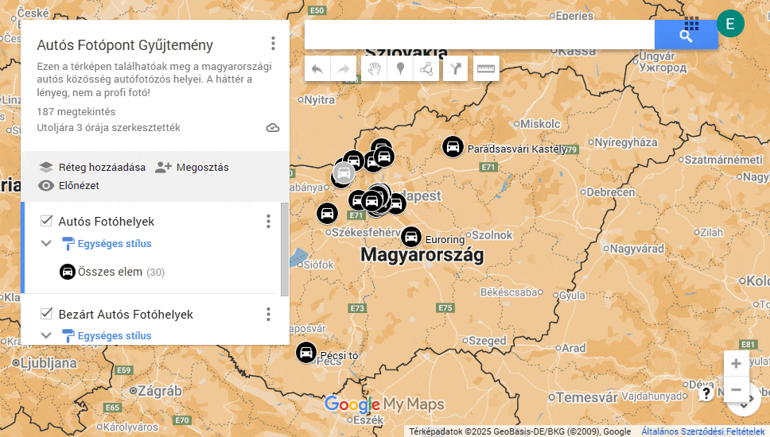

Az Autós Fotópont Gyűjtemény Magyarország legszebb autós és motoros fényképezési helyszíneit foglalja össze egy interaktív térképen. A közösségileg szerkeszthető adatbázis segít megtalálni a panorámás háttereket a járgányod megörökítéséhez.
Szerkesztési Engedély Űrlap
Az Autós Fotópont Gyűjteményről
Üdvözöllek az Autós Fotópont Gyűjteménynél!
Ez egy nyílt projekt, amelynek célja, hogy összegyűjtse a Magyarországon található jó helyeket autók fényképezésére.
A Magyarországi autós fotó helyszín gyűjtemény közösségével együttműködve,
a gyűjtemény folyamatosan bővül, és mindenki hozzájárulhat új helyek hozzáadásával.
Kattints a térképen található ikonokra, hogy megtekintsd a helyszínek részleteit.
Ezután a bal-felső panelben megnyithatod és végignézheted a képeket teljes felbontásban.
Ha te is szeretnél részese lenni, kérjük, használd a gombot a jobb felső sarokban található ceruza ikonra kattintva.
Szükséged lesz egy Google-fiókra, hogy szerkeszthesd a gyűjteményt.
Szerkesztés
Ha már kaptál szerkesztési engedélyt, akkor kattints ide a szerkesztő megnyitásához.
Ha némi segítségre van szükséged a szerkesztő használatához, akkor nézd meg az alábbi animációt:

Ha fel szeretnél tölteni egy képet, de nem tudod pontosan hol is készítetted, akkor próbáld meg ezt a weboldalt, hátha benne van a képben a készítés helyadata.
Itt a "Choose Files" gomb lenyomása után kiválasztott képeid megjelennek a térképen (ha van bennük hely).
A kiválasztott képekre kattintva megjelenik a "Copy GPS" gomb, mellyel másolhatod a koordinátáit, amit a szerkesztő keresőjébe beilleszthetsz, hogy rögtön odaugorjon.